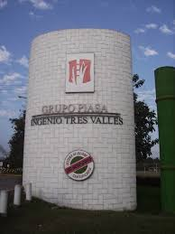
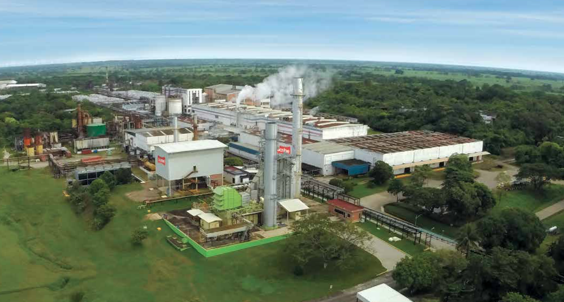
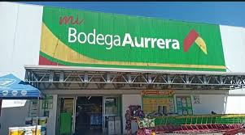
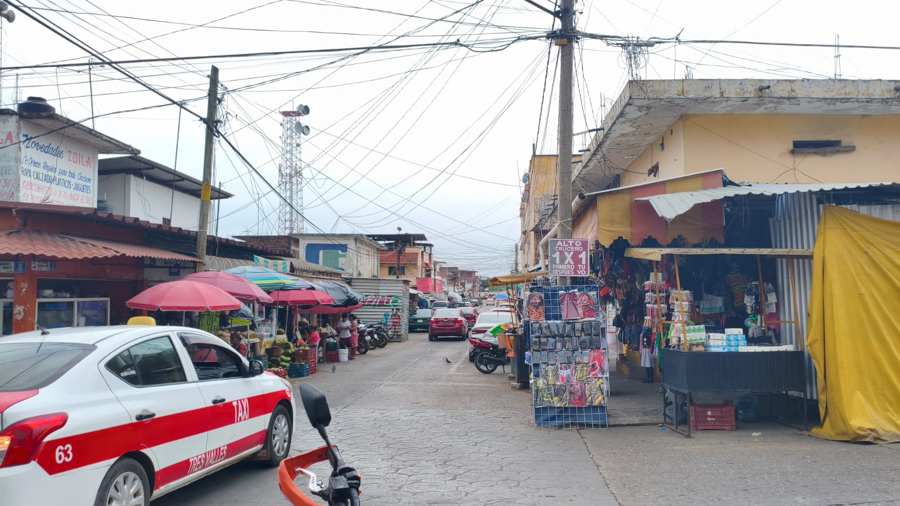

Contador de visitas
Tres Valles es un municipio cuya economía se desarrolla principalmente a partir de actividades agrícolas e industriales. A lo largo del tiempo, estas actividades han permitido que la población cuente con distintas fuentes de ingreso, además de impulsar el crecimiento del lugar. La combinación del trabajo en el campo con la presencia de empresas ha generado oportunidades laborales y ha favorecido el movimiento económico en la región.
El Ingenio Tres Valles es considerado el gigante de la Cuenca del Papaloapan y uno de los pilares de la industria azucarera mexicana. Su operación no solo destaca por el volumen de producción sino por su integración tecnológica y su importancia estratégica para el sector agroindustrial. tambien representa una de las actividades más importantes dentro del municipio, ya que se encarga del procesamiento de la caña de azúcar que se cultiva en la región. Este lugar no solo genera empleo directo para muchas personas, sino que también beneficia a quienes trabajan en el campo. Gracias a esta actividad, se mantiene en movimiento una parte importante de la economía local.

La planta de Scribe en Tres Valles no es solo una fábrica, es una institución histórica que comenzó operaciones en 1974 bajo el nombre de Papel de Árbol. En sus inicios, su ubicación fue estratégica para aprovechar la cercanía con el Ingenio tres Valles, ya que originalmente se buscaba utilizar el bagazo de la caña como fibra para hacer papel. Con el paso de las décadas y tras la adquisición por parte de Bio Pappel en 2015, la planta se transformó radicalmente. Dejó de ser una papelera tradicional para convertirse en un complejo de alta tecnología que lidera la producción nacional de papel bond. Lo que hace especial a la planta de Scribe en Tres Valles hoy en día es su compromiso con el medio ambiente, alejándose de la imagen de la industria papelera contaminante.

Tiendas Lores representa uno de los casos de éxito empresarial más emblemáticos del estado de Veracruz, teniendo su origen en el corazón de Tres Valles. La historia de esta cadena de supermercados comenzó formalmente en agosto de 1978, bajo la visión de su fundador, el señor Artemio Reyes López. Lo que inició como un proyecto familiar basado en el esfuerzo y el conocimiento del comercio popular, se transformó con el tiempo en una infraestructura sólida que logró llevar el formato de autoservicio a zonas donde las grandes cadenas nacionales aún no tenían presencia. Tiendas Lores en Tres Valles, Veracruz, es una cadena de supermercados regional emblemática fundada por Artemio Reyes López, con raíces que se remontan a 1978. Conocida por su lema “Dar, dar, dar”, la empresa destaca por ofrecer productos de calidad a precios accesibles, convirtiéndose en un punto de referencia esencial para familias en la Cuenca del Papaloapan y zonas aledañas de Oaxaca.

Bodega Aurrera es la principal cadena minorista de bajo costo en México y forma parte del grupo Walmart de México y Centroamérica. Fundada originalmente en 1958, la empresa se especializa en ofrecer productos básicos, alimentos y mercancías generales a precios altamente competitivos, utilizando la figura de Mamá Lucha como su estandarte publicitario. En la localidad de Tres Valles, Veracruz, la compañía opera a través de su formato Mi Bodega Aurrera, el cual se ubica estratégicamente en el Bulevard Francisco Gutiérrez Barrios. Esta sucursal funciona todos los días de la semana de ocho de la mañana a diez de la noche, brindando a la comunidad local acceso no solo a productos de consumo diario, sino también a servicios financieros básicos y pago de servicios en un mismo lugar.

El mercado es uno de los principales espacios donde se lleva a cabo el comercio local. En este lugar, las personas compran y venden productos necesarios para su vida diaria. tambien se presenta como un ecosistema comercial completo donde la organización de los puestos refleja la vida cotidiana de la Cuenca del Papaloapan. En su conjunto, el mercado funciona como una unidad vibrante donde los espacios se entrelazan para cubrir todas las necesidades de la población, desde la alimentación más básica hasta el equipamiento del hogar y el vestuario.el mercado se complementa con una amplia variedad de locales dedicados a la mercancía seca y servicios diversos. Aquí se agrupan los puestos de ropa, calzado, mercería y artículos de plástico para el hogar, ofreciendo una alternativa accesible para el consumo diario.

Coppel Tres Valles representa el motor comercial y financiero más dinámico dentro del municipio, consolidándose como una infraestructura esencial para la vida cotidiana de sus habitantes. A diferencia de un comercio tradicional, esta empresa opera como un ecosistema integral donde convergen el acceso al consumo de bienes duraderos, como tecnología y muebles, con una robusta plataforma de servicios bancarios diseñados para la inclusión financiera de la población local. Su presencia en la zona centro no solo ha modernizado el paisaje urbano, sino que ha transformado los hábitos de consumo al introducir un esquema de crédito quincenal que permite a las familias adquirir productos de alto valor sin necesidad de contar con liquidez inmediata Para la comunidad de Tres Valles, la tienda es el punto neurálgico para la recepción de remesas, un flujo económico vital para la región, y funciona como un centro de servicios múltiples donde se pueden gestionar ahorros, préstamos personales y el pago de servicios básicos.

En la comunidad de Tres Valles, la Tienda 3B se ha convertido en un punto de referencia clave para el consumo local debido a su ubicación estratégica en la zona centro. A diferencia de las grandes cadenas comerciales, esta tienda se adapta al ritmo del municipio ofreciendo una opción de compra ágil para quienes acuden diariamente al corazón del pueblo por sus suministros básicos. Su presencia en esta localidad facilita que los habitantes de las colonias cercanas y de las zonas rurales que visitan la cabecera municipal encuentren productos de despensa esenciales, como lácteos, embutidos y artículos de limpieza, sin tener que pagar los precios más altos de las tiendas de conveniencia tradicionales. la tienda complementa la oferta de los mercados y comercios locales, permitiendo que la gente de la región rinda más su dinero mediante sus marcas exclusivas permite a los trabajadores y familias realizar sus compras después de sus jornadas laborales o durante el fin de semana en un ambiente seguro y ordenado.